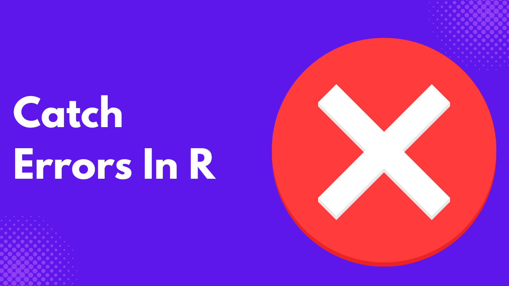
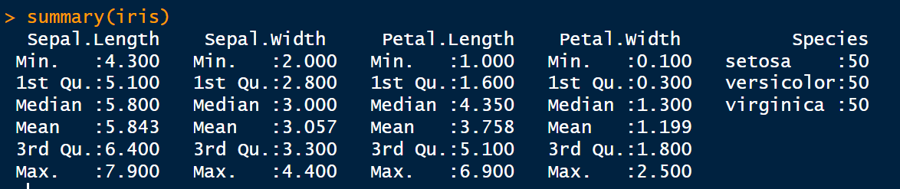

In a world driven by data, accuracy is crucial for informing business decisions, shaping public policy, or guiding scientific research; even a minor error in a dataset can lead to significant consequences. A misplaced decimal, a missing value, or a wrong assumption can quickly spiral into misinformation, financial loss, or damaged reputations.
We’ve seen it happen: news headlines expose flawed reports, insufficient data erodes public trust, and organizations scramble to correct errors that could have been caught early. These real-world data scandals highlight a critical truth: ensuring accuracy isn’t just a technical task; it’s a responsibility.
That’s where tools like R come in. With the proper practices and built-in features, R empowers analysts and data scientists to spot issues before they escalate, helping prevent the next headline-making blunder.
In 2012, JP Morgan Chase suffered a $6 billion trading loss, partly attributed to errors in an Excel risk model. The model contained manual copy-paste errors and formula mistakes, resulting in an underestimation of potential losses. This incident highlights the risks associated with relying on complex spreadsheets without rigorous checks and balances.
Why R?
R as a tool for data analysis and validation
R is a powerful environment specifically built for data analysis, statistical computing, and visualization. What sets R apart is its strong focus on data integrity and reproducibility, making it an excellent choice for catching and correcting errors before they become costly.
Regarding data validation, R offers many tools to clean, inspect, and audit datasets. Analysts can write scripts to automate checks, identify anomalies, and enforce consistency across large data sets. Unlike manual spreadsheet work, R encourages repeatable workflows, reducing the risk of human error.
R’s active ecosystem includes packages like dplyr, readr, janitor, and assertr, each designed to streamline the process of identifying and handling dirty or flawed data, such as checking for missing values, outliers, or logic inconsistencies.
Built-in features for error detection
R offers a robust set of built-in features and packages designed to detect and prevent data errors before they escalate into significant issues.
Functions such as summary(), str(), and head() enable you to quickly inspect the structure and contents of your data. These commands can reveal missing values, unexpected data types, or unusual ranges; all red flags that something may be amiss.
R also provides clear warnings and error messages when something goes wrong during code execution. For example, if you attempt a calculation on incompatible data types, R will alert you with informative feedback, making it easier to diagnose and fix the issue.
Additionally, tools like is.na() help identify missing values, while functions such as duplicated() and anyDuplicated() catch repeated entries that could skew results. Logical checks such as all(), any(), and stopifnot() enforce rules and conditions in your workflow, effectively acting as built-in safeguards.
For more advanced needs, R offers specialized packages such as assert, validate, and testthat, which formalize and automate error detection and testing routines.
Common Error Types
When working with data, mistakes can come from many sources. Recognizing standard error types is the first step toward preventing them from affecting your analysis:
- Data Entry Errors: Manual data entry is prone to typos, incorrect formats, and misclassifications. For example, entering “220” instead of “22” for age, or misspelling a category as “Femle” instead of “Female,” can create false patterns in analysis.
- Missing or Inconsistent Values: Missing data is frequent, especially when combining datasets from multiple sources. Gaps can appear as
NA, empty strings, or zero values, requiring different handling. Inconsistencies, like mixing “Yes/No” with “Y/N”, can make grouping or summarizing data difficult. - Logical Inconsistencies: These errors occur when data contradicts itself. For instance, a record showing a person’s birthdate after their date of death, or a student listed as “graduated” but with no courses completed. Such issues often go unnoticed until they cause problems in the analysis or report.
Base R Functions for Preliminary Checks
summary()
The summary() function gives a quick statistical summary of each column in a data frame, For factors, it shows the frequency of each level; for logical it shows the counts of TRUEs and FALSEs, while for numeric data it shows the:
- minimum
- first quartile
- median
- mean
- third quartile
- maximum
It is used to quickly identify outliers or unexpected values. Here is an example using the iris data.
summary(iris)
summary() of the iris data. Image by Author.str()
The str() function reveals the internal structure of an R object, displaying information such as data types and sample values for each variable, as well as the number of observations and variables.
Before proceeding with the analysis, you should use str() to understand the kind of data you are handling.
str(iris)
str() revealing the structure of the iris dataset. Image by Author.is.na()
is.na() function detects missing values (NA) in your data, returning a logical vector of TRUE where values are NA, and FALSE otherwise. It checks for incomplete data, which can affect analysis or model performance.
sum(is.na(iris)) # Count total missing values
duplicated()
The duplicated() function identifies duplicate rows or elements and returns a logical vector indicating which entries are duplicated. This is useful for cleaning datasets and flagging potential data entry issues.
duplicated(iris) # Shows which rows are duplicates
iris[duplicated(iris), ] # Displays duplicate rows
External Packages
Other external packages extend what R does in terms of detecting errors.
validate package
The validate package lets users define and apply custom validation rules to datasets. For example:
library(validate)
# Define validation rules for iris
# For example:
# - Sepal.Length and Sepal.Width should be positive
# - Species should be one of the known species in iris
rules <- validator(
Sepal.Length > 0,
Sepal.Width > 0,
Species %in% c("setosa", "versicolor", "virginica")
)
# Apply the rules to the iris dataset
confronted <- confront(iris, rules)
# Summarize the results of the validation
summary(confronted)
validator package. Image by Author.This approach helps systematically identify records that violate predefined conditions, ensuring data consistency and reliability.
assertr package
assertr provides a pipeline-friendly syntax for asserting conditions on data frames. It integrates seamlessly with dplyr and checks assumptions within data processing workflows. For example:
# Load necessary packages
library(dplyr)
library(assertr)
# Use dplyr pipeline and assert conditions on iris data
iris |>
# Assert Sepal.Length is positive
assert(within_bounds(0, Inf), Sepal.Length) |>
# Assert Sepal.Width is positive
assert(within_bounds(0, Inf), Sepal.Width) |>
# Assert Species is one of the valid species
assert(in_set(c("setosa", "versicolor", "virginica")), Species) |>
# Select only Sepal measurements
select(Sepal.Length, Sepal.Width, Species)
assert package. Image by Author.checkmate package
The checkmate package is designed for defensive programming, offering a suite of functions to validate function arguments and data structures. It ensures that inputs meet expected criteria before further processing, reducing the risk of runtime errors. Here is an example using the iris dataset:
# Load the checkmate package
library(checkmate)
# Define a function that processes iris data
process_iris_data <- function(data) {
# Defensive checks using checkmate
assert_data_frame(data, any.missing = FALSE, min.rows = 1)
assert_names(names(data), must.include = c("Sepal.Length", "Sepal.Width", "Species"))
assert_numeric(data$Sepal.Length, lower = 0)
assert_numeric(data$Sepal.Width, lower = 0)
assert_factor(data$Species, levels = c("setosa", "versicolor", "virginica"))
# Continue processing safely after checks
summary_stats <- summary(data)
return(summary_stats)
}
# Apply the function to the iris dataset
process_iris_data(iris)
checkmate package. Image by Author.data.validator package
Developed by Appsilon, the data.validator enables the creation of automated data quality reports. It facilitates the communication of data validation results to stakeholders, generating reports which you can export into HTML, CSV, and TXT formats. For example:
# Load libraries
library(data.validator)
library(dplyr)
# Initialize the report
report <- data_validation_report()
# Add validation steps
validate(iris) %>%
validate_cols(description = "Sepal.Length is numeric", predicate = is.numeric, cols = Sepal.Length) %>%
validate_cols(description = "Sepal.Width is numeric", predicate = is.numeric, cols = Sepal.Width) %>%
validate_cols(description = "Petal.Length is numeric", predicate = is.numeric, cols = Petal.Length) %>%
validate_cols(description = "Petal.Width is numeric", predicate = is.numeric, cols = Petal.Width) %>%
validate_cols(description = "Species is a factor", predicate = is.factor, cols = Species) %>%
validate_if(description = "No missing values in Sepal.Length", Sepal.Length %>% is.na() %>% not()) %>%
validate_if(description = "Sepal.Length > 0", Sepal.Length > 0) %>%
validate_if(description = "Sepal.Width > 0", Sepal.Width > 0) %>%
add_results(report)
report
data.validator package. Image by Author.Best Practices
To get the most out of R for data validation and error detection, follow these proven best practices:
- Write Reproducible Code: Always aim for scripts that can be run from start to finish without manual intervention. Combine analysis and reporting in one reproducible document using R Markdown or Quarto.
- Document Your Workflow: Use comments and meaningful variable names to make your code understandable to others and yourself in the future. Tools like
roxygen2can help document functions. - Automate Checks Early: Build validation rules into your workflow from the beginning, not as an afterthought. Use packages like
validate,assertr, andcheckmateto set up automated gates for bad data. - Test Regularly: Use
testthatto create unit tests for your functions and workflows. Testing small components ensures that failures are caught early. - Use Version Control: Track your scripts and data validation logic using Git. Integrating Git with RStudio enables you to track changes, collaborate with teammates, and roll back changes if something goes wrong.
- Log and Monitor Data Quality: Set up periodic reports or dashboards that highlight rule violations using tools like
data.validator. - Create Reusable Validation Templates: Develop standardized validation templates that can be easily adapted to new datasets, particularly for recurring tasks.
Real-World Examples
While high-profile failures, such as the JP Morgan Chase incident, remind us of what can go wrong without validation, many organizations quietly use R to prevent such problems. Here are a few real-world cases:
- Public Health Surveillance: During the COVID-19 pandemic, epidemiologists widely used R to clean and validate daily case data. By integrating validation checks into their R scripts, public health teams quickly caught inconsistent age brackets, duplicate case IDs, and conflicting test result entries, avoiding flawed metrics in official reports.
- Silent Data Corruption in RNA-Seq Analysis: A computational biologist encountered silent data corruption during differential gene expression analysis. The issue stemmed from a buggy error message in a package, a malformed input file, and unexpected behavior in R’s conversion from factor to integer. Quality control functions within R helped identify and rectify these subtle errors.
- Independent Quality Control in Clinical Studies: In a medical device study, R was used to perform independent quality control by generating reporting datasets and statistical outputs. Utilizing packages like
tidyverse,admiral, andTplyr, this approach provided an additional layer of assurance by cross-validating results obtained through different programming languages.
Conclusion
In a data-driven world, accuracy isn’t just a technical requirement; it’s a strategic necessity. Errors in datasets can lead to flawed decisions, eroded trust, and costly mistakes. However, with the right tools and practices, many of these issues can be prevented.
R offers a rich ecosystem for identifying, correcting, and preventing data errors through automation, reproducibility, and rigorous checks. From base functions like summary() and is.na() to powerful packages like assertr, checkmate, and data.validator, R gives analysts the tools they need to maintain data integrity at scale.
Integrating these practices into your workflow allows you to write better code, and helps your organization make smarter, safer decisions. In the end, good data hygiene isn’t just about avoiding errors; it’s about confidently enabling insight.
Need Help with Data? Let’s Make It Simple.
At LearnData.xyz, we’re here to help you solve tough data challenges and make sense of your numbers. Whether you need custom data science solutions or hands-on training to upskill your team, we’ve got your back.
📧 Shoot us an email at admin@learndata.xyz—let’s chat about how we can help you make smarter decisions with your data.